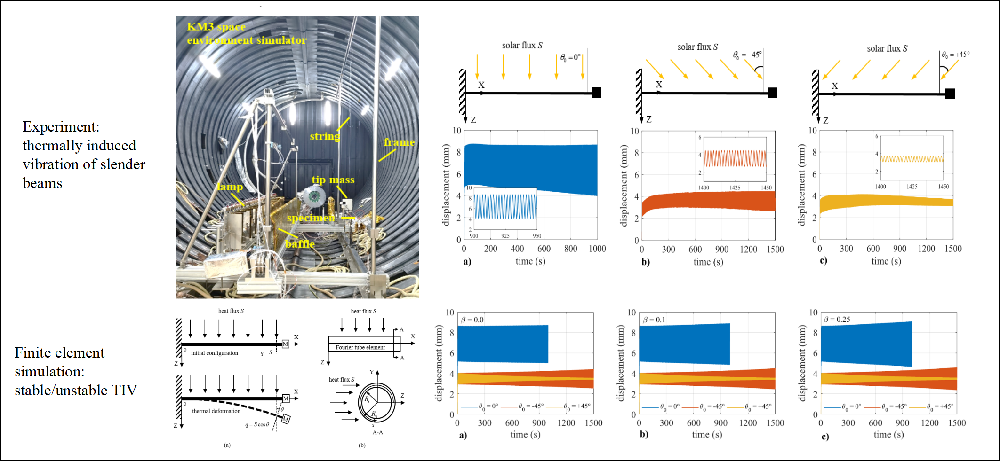

B.S. 2020 mechanical engineering Tsinghua University
Teach Experience
T.A. Spring Semester 2022 Course: Finite element method for undergraduate
Research Experience
Summer Research: Mechanics and Morphology of Stiff Film/Soft Subtrate Hyperelastic Bi-layer System Advisor:Rui Huang, Professor at Department of Aerospace Engineering & Engineering Mechanics, University of Texas at Austin, U.S.A. Paper: Periodic ridge formation in elastic film-substrate system (being written and revised, aimed to submit to International Journal of Solids and Structures), Jin D., Huang R.,2022
Simulated the pre-strecth and overall compression process of hyperelastic(neo-Hookean) stiff film-soft substrate bi-layer system by Abaqus, intrigued the periodic ridge and subsequential second wrinkling bifurcation. Obtained the phase diagram of morphology evolution.
Established a morphology phase diagram according to the simulation results, based on which controlled morphology can be achieved by adjusting two critical parameters, i.e. the pre-stretch and compression.
Revealed the mechanism of wrinkling to periodic ridge formation transition that the softening/hardening effects by pre-stretch and compression result in multi-stable surface morphology, and revealed for the first time the negative correlation between the spacing of periodic ridge and the pre-stretch.
Developed a new beam element, which considers large deformation and thermal-mechanical constitutive and can effectively simulate the temperature field and mechanical response. Independently programmed finite element programes based on the new element for static and dynamic analysis;
Simulated the unstable thermally induced vibration of slender beams, clarified the mechanism of stability of thermally induced vibration by theoretical analysis, and verified the stability mechanism by experiments.
Thermal buckling of arches: Derived the buckling equation for arches under conbination of gradient temperature field and mechanical load, and analysed the effect of temperature distribution on buckling mode and assotiated critical temperature/critical load of arches..

Anisotropic Nonlinear Kinematical Hardening Elastoplastic Constitutive Model | Course Project for Nonlinear Finite Elements for Continua and Structures Advisor: Zhuo Zhuang, Professor at Department of Mechanical Engineering, Tsinghua University, China Report: Anisotropic Nonlinear Kinematical Hardening Elastoplastic Constitutive Model. Jin D., Ji C., Wang Z., 2021
Derived the Hill48-A-F elastoplastic constitutive formulation by combining Hill48 anisotropic yield criterion and Armstrong-Frederick (A-F) nonlinear kinematic hardening model;
Implemented the elastoplastic model in Abaqus by programming in the user-defined material subroutine UMAT;
Parametric study: investigated the influence of hardening and anisotropic parameters on the elastoplastic material, simulated Bauschinger effect under cyclic loading, and finished corresponding Course Project Report